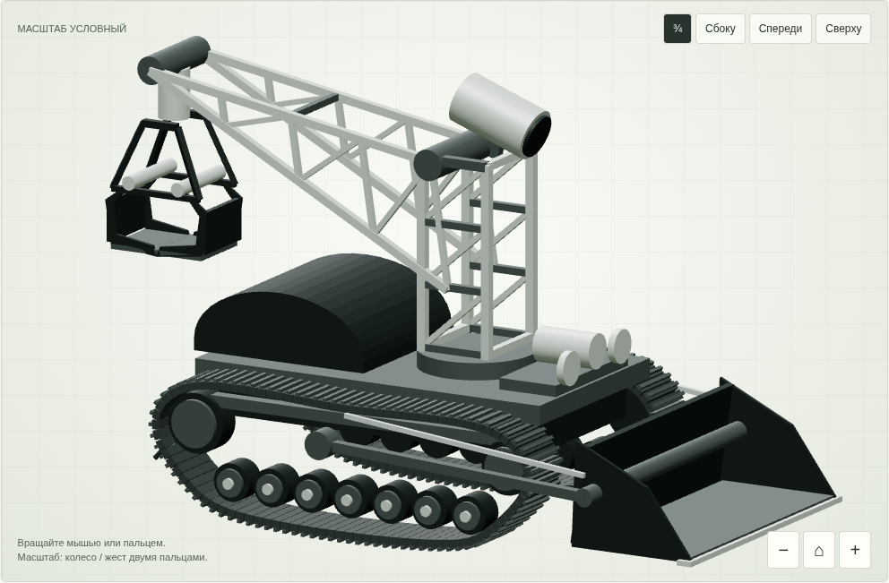
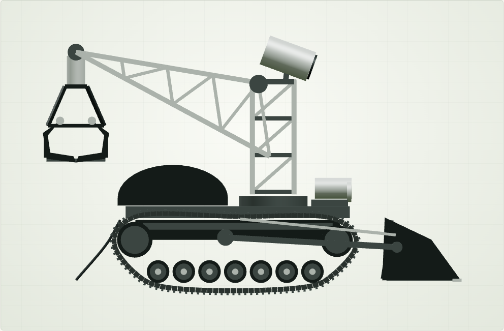
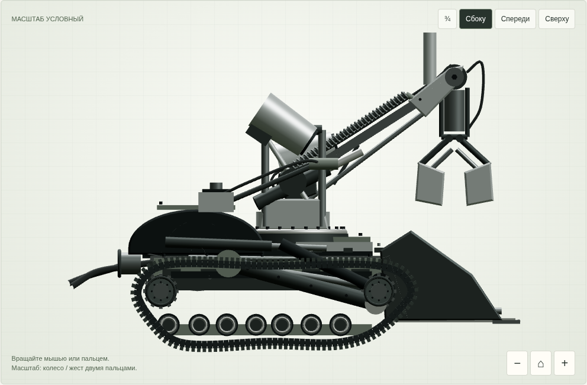
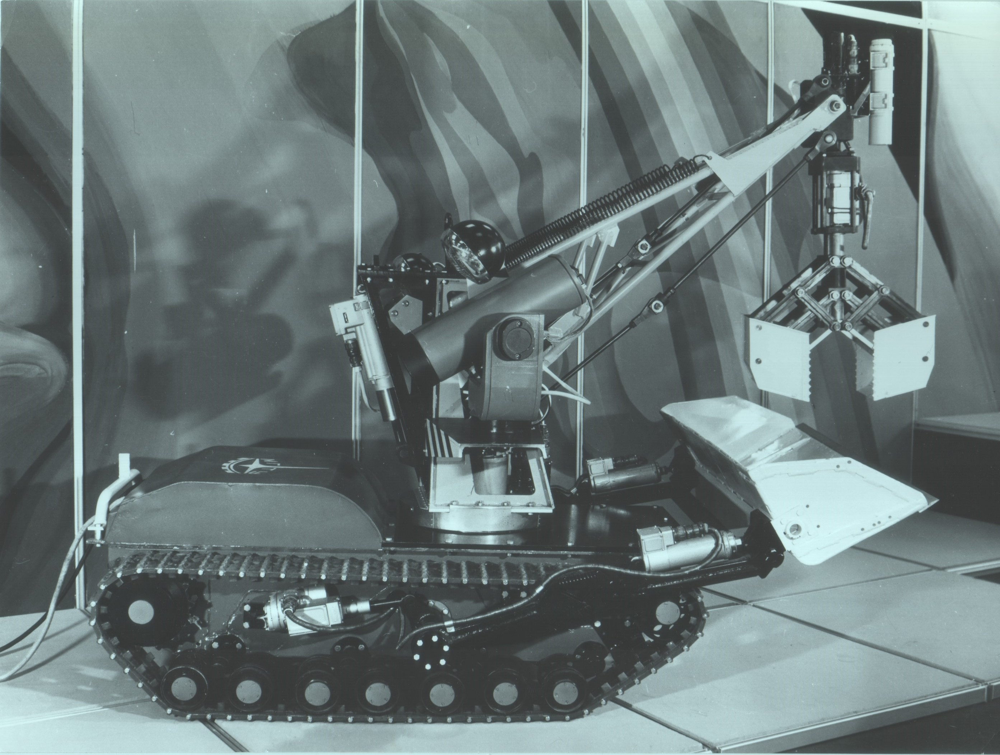

РЕЗЕРВНЫЙ ПОКАЗ · БЕЗ WEBGL И JAVASCRIPT
Две исследовательские модели
Кадры настоящего браузерного рендеринга. Геометрия приблизительна; это не архивные фотографии.
Вернуться к интерактивной экспозиции
Мобот · 1986 · v5


Мобот · 1987 · v20


Оригинальные архивные снимки


A — документ; B — внешний признак на фото; C — размеры, оси и внутренние механизмы без измерения. Обе модели исследовательские.
Сценарий демонстрации